Newton’s three laws, rewritten for things that turn — and the
one quantity a person can change at will.
Angular Kinetics 3
The same three laws, said again for rotation
Every law from linear kinetics has an angular twin. The sentences are
the same sentences with the nouns swapped.
Linear
Angular
what resists
mass m
moment of inertia I
what acts
force F
torque M
1st law
constant v unless a force acts
constant ω unless a torque acts
2nd law
F = ma
M = Iα
momentum
p = mv
L = Iω
impulse
Ft = Δp
Mt = ΔL
One row is not a swap. Mass is a number;
moment of inertia is a number per axis, and it changes when you
move. That one difference is what the rest of this lecture is about.
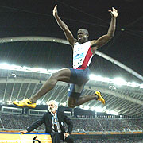
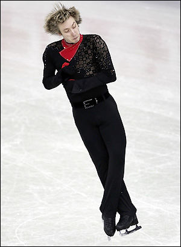
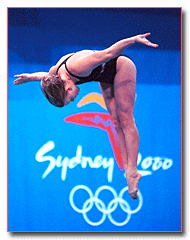
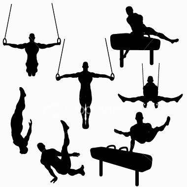
Angular Kinetics 3
Newton’s first law, for turning
Linear. A body maintains a constant state of rest or constant
velocity unless acted upon by an external force.
Angular. A body maintains a constant state of angular motion unless
acted upon by an external torque.
Both halves matter, and the second half is the one people forget.
“At rest” is a constant state of angular motion. So is spinning at eleven
revolutions a second. Neither changes by itself.
In linear kinetics, inertia is quantified by mass — the
resistance to a change in the state of motion.
Angular inertia is the property of an object to resist
changes in its angular motion. It depends on two things:
the mass of the object
the distribution of that mass relative to the axis of rotation
The second one is new. Nothing in linear kinetics cared
where the mass was. Everything in angular kinetics does.
Angular Kinetics 3
Moment of inertia: I = Σ m r2
Angular Kinetics 3
What the squaring means
I = Σ m r2
= m1r12
+ m2r22
+ m3r32 + …
Mass appears once. Distance appears twice. So:
double a mass and its contribution doubles
double its distance and its contribution quadruples
Which is why his slide says, in one line, that the distribution of
mass has a greater influence on angular inertia than mass.
The units follow from the definition and are worth saying out loud
once: kilograms times metres squared, kg·m2. Not
kilograms. Not newtons. A moment of inertia is not a force and not a mass.
A useful habit: whenever you meet a new rotational quantity, check its units against
the linear one it replaces.
m → kg becomes I →
kg·m2; p → kg·m/s becomes L →
kg·m2/s; Ft → N·s becomes Mt →
N·m·s. The extra metre is the moment arm, every time.
Angular Kinetics 3
The radius of gyration
Angular Kinetics 3
Two ways to write the same number
I = Σ m r2
every particle, counted separately
I = m k2
all the mass at one distance k
Both give the same I. The second is how anthropometric tables
report segment data: a mass fraction and a radius of gyration expressed as a
fraction of segment length, so one table serves every body.
Winter’s table gives three radii of gyration for each segment —
about its own centre of gravity, about its proximal end, and about its distal end —
because which one you need depends on where the axis is.
segment
mass
kCofG
kprox
kdist
Thigh
0.100 M
0.323 L
0.540 L
0.653 L
Leg
0.0465 M
0.302 L
0.528 L
0.643 L
Foot
0.0145 M
0.475 L
0.690 L
0.690 L
The three are not independent: kprox2 =
kCofG2 + d2, which is the next slide.
Why the centre of gravity
Of all the axes an object could turn about, one of them is special
— and it is special for a reason you can compute.
Angular Kinetics 3
Anything thrown turns about its own centre of gravity
We established last lecture that an object in the air and free to
rotate turns about its centre of gravity. Now we can add the second half:
its resistance to turning is its moment of inertia
which depends on its mass and on the
distribution of that mass
A bat and a racquet are nearly the same length and nothing like the
same object to swing, because one has most of its mass near the far end and the other
has a strung hoop and a light shaft.
Thrown, both of them tumble about the marked point and
nothing else — whatever shape they are, and however you throw them.
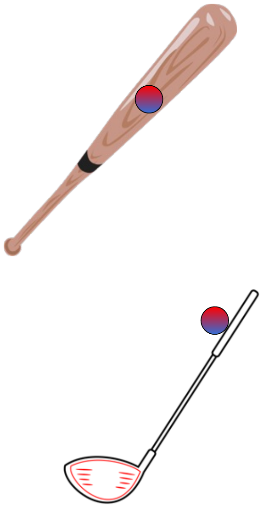
Angular Kinetics 3
Example problem — about the centre of gravity
Same object: a 10 kg mass 0.25 m from point A, and a 10 kg mass
0.75 m from A. This time, find I about its centre of
gravity.
First, locate the centre of gravity —
last lecture’s sum:
CofG = Σ(m · r) / Σm
= [ (10)(0.25) + (10)(0.75) ] / (10 + 10)
= 10.0 / 20 = 0.50 m from A
Then the moment of inertia about that point, with both
masses now 0.25 m away:
I = (10)(0.25)2 + (10)(0.25)2
= 0.625 + 0.625 = 1.25 kg·m2
And the radius of gyration about the centre of gravity:
k = √(I/m)
= √(1.25 / 20) = 0.25 m
About A it was 6.25. About the centre of
gravity it is 1.25 — a fifth of the resistance, from the same
object. Nothing moved but the axis.
Angular Kinetics 3
So why does a free object turn about its centre of gravity?
Angular Kinetics 3
The parallel-axis theorem
Iaxis =
ICofG + m d2
where d is the perpendicular distance
from the centre of gravity to the axis.
It does three jobs at once:
it explains the parabola on the last slide
it says the minimum is always at d = 0
it is how a table of segment data covers every axis you might need
Check it on the worked example: 1.25 + (20)(0.50)2
= 1.25 + 5.00 = 6.25, which is I about A.
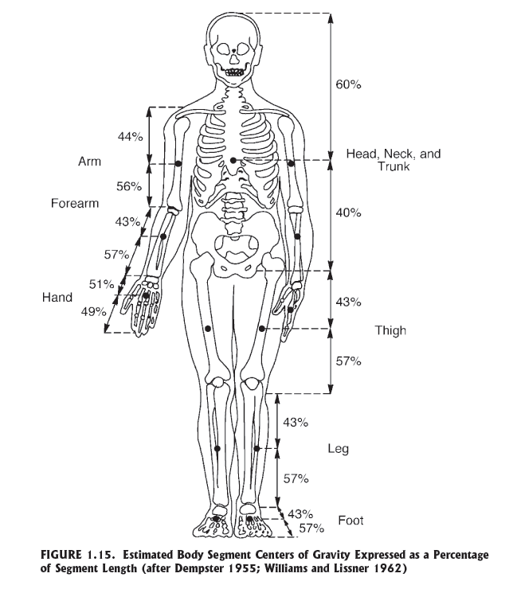
Winter’s table gives k about the segment’s own centre
of gravity. Everything else — about the hip, about the whole body — is that
number plus m d2.
A body that can change its own inertia
Mass you are stuck with. Where you hold it, you are not.
Angular Kinetics 3
Moment of inertia about different axes
An object can turn about many axes, so it has a moment of inertia
for each one — because the mass is spread out differently with
respect to each.
For a standing person the three that matter are:
mediolateral — through the hips, side to side.
A somersault turns about this one.
anteroposterior — front to back. A cartwheel.
longitudinal — head to toe. A twist.
They are not close to each other. For a standing adult the
twist axis is roughly ten times easier to turn about than the other
two — which is why a twist is the cheapest rotation in the air and a somersault
the most expensive.
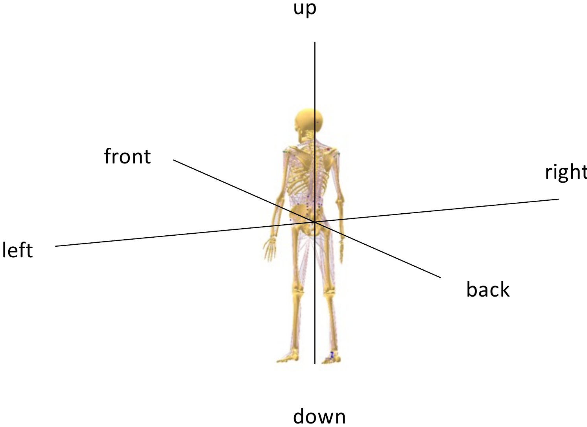
Angular Kinetics 3
His slide 21, computed on a real body
Angular Kinetics 3
The published figure
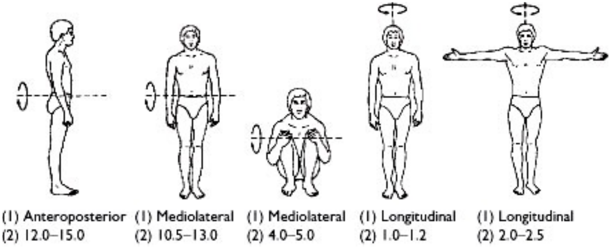
Five positions, three axes, and the point of the whole lecture in one row of
numbers: the same person, from 1.0 to 15.0 kg·m2,
with nothing changed but posture and the choice of axis.
Angular Kinetics 3
Manipulating the moment of inertia of the human body
Humans and animals change the orientation of their limbs constantly, and
every change redistributes mass about every axis. The moment of inertia changes with
it — not as a side effect, but as the thing being controlled.
Three examples, all on the next few slides:
a sprinter folds the knee so the leg is cheaper to swing forward
a diver tucks so the same angular momentum buys three somersaults
instead of one
a cat, with no angular momentum at all, still turns itself over
Only one quantity in M = Iα is under
voluntary control, and it is I. That is why so much technique is really
about limb position.
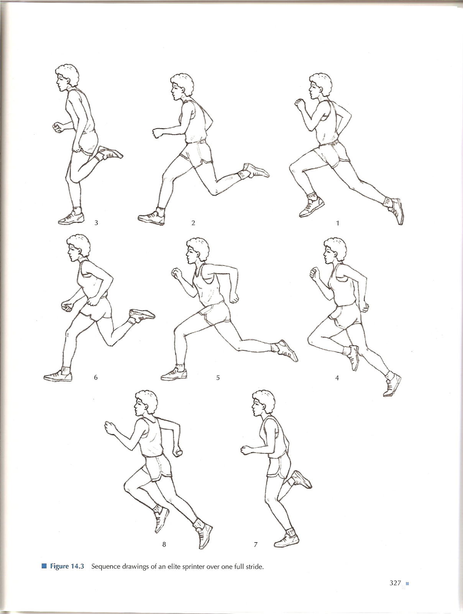
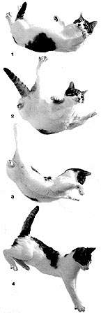
The cat starts with zero angular momentum and lands feet-down with zero
angular momentum. It never breaks the first law — it changes its moment of
inertia about one axis while turning about another, twice, in opposite senses.
Angular Kinetics 3
A sprinter reduces the moment of inertia about the hip by flexing the knee
Newton’s first law, angular
Angular momentum, and the fact that nothing in the air can change it.
Angular Kinetics 3
Angular momentum
In linear kinetics, an object in motion has momentum
— inertia in motion:
p = m v
p = m (inertia) ·
v (in motion)
Angular momentum is the tendency of an object to remain
in angular motion. It is determined by the moment of inertia and the angular
velocity:
L = I ω
L = I (angular inertia) ·
ω (in angular motion)
Units: kg·m2/s.
The first law, angular. A body
maintains a constant state of angular motion unless acted on by an external torque.
So in the air, with gravity the only force
acting, and gravity acting at the centre of gravity:
Linitial =
Lfinal
Iiωi
= Ifωf
— the conservation of angular momentum, and the
reason a diver can decide in the air how many somersaults to do, but not whether to
do any.
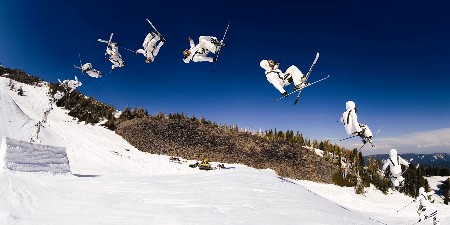
Angular Kinetics 3
Is that actually true? A measured flight phase
Angular Kinetics 3
Conservation of angular momentum
Angular Kinetics 3
Example problem — the figure skater
If a figure skater has an angular velocity of 12 rad/s
with her arms extended (I = 0.36 kg·m2), what does her angular
velocity change to when she brings her arms in
(I = 0.04 kg·m2)?
Write down the proper equation
Linitial = Lfinal
Iiωi =
Ifωf
Write down given and unknown values
Ii = 0.36 kg·m2ωi = 12 rad/s
If = 0.04 kg·m2ωf = ?
Substitute and solve
(0.36)(12) = (0.04)ωf
ωf = 108 rad/s
Check the answer against the world. 108 rad/s is
17.2 revolutions a second. The fastest scratch spins on film are
about 5.
The algebra is right. The inputs are not: 0.36 → 0.04
is a 9 : 1 change in moment of inertia, and a person
cannot do that. Measured skaters manage roughly 3.5 : 1 — which,
from a realistic 9 rad/s start, lands near the 5 rev/s you can see.
Converting an answer into something you can picture is not an optional
last step. It is how you find out whether you believe it.
rad/s → rev/s: divide by
2π ≈ 6.28. Worth doing every single time an angular velocity comes out of
a problem.
Angular Kinetics 3
Example problem — the diver, with the radius of gyration
A 60 kg diver leaves the board with a radius of gyration
of 0.5 m and an angular velocity of 4 rad/s. What is
his angular velocity in a tuck, with a radius of gyration of
0.25 m?
Equations
Iiωi =
IfωfI = m k2
Moments of inertia in the two positions
I1 = m k12
= (60)(0.5)2 = 15 kg·m2
I2 = m k22
= (60)(0.25)2 = 3.75 kg·m2
Then conservation
(15)(4) = (3.75)ωf
ωf = 16 rad/s
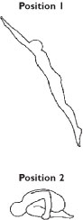
Halve k and you quarter I, because k is
squared — so the angular velocity goes up by four, not two.
16 rad/s is 2.5 rev/s, which is what a tucked diver
actually does. This one survives the sanity check.
Angular Kinetics 3
How many somersaults fit in the time you have
Angular Kinetics 3
The whole-body sum, segment by segment
Newton’s second law, angular
What it takes to change any of this — and where in a movement
you have to spend it.
Angular Kinetics 3
Newton’s second law: the law of acceleration
Linear. A force applied to a body causes an acceleration
of that body, of a magnitude proportional to the force, in the direction of the force,
and inversely proportional to the body’s mass.
F = m a
Angular. A torque applied to a
body causes an angular acceleration of that body, of a magnitude proportional to the
torque, in the direction of the torque, and inversely proportional to the body’s
moment of inertia.
τ = F d⊥M = I α
The greater the inertia of an object, the more
force — or torque — is needed to make it accelerate.
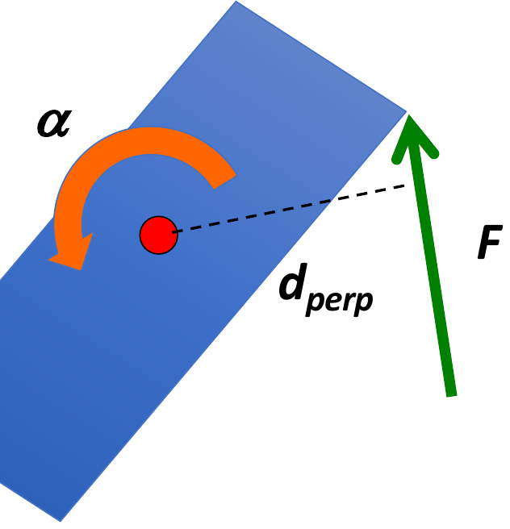
If a net external torque acts at a distance from the axis of rotation,
the object accelerates angularly in the direction of that torque, in
proportion to it, and in inverse proportion to its moment of inertia.
Two ways to get more angular acceleration out of the same
muscle: push harder, or push further from the axis.
The second is usually cheaper, and it is most of what equipment design is for.
Angular Kinetics 3
Angular impulse: a torque applied for a certain amount of time
Angular Kinetics 3
The angular impulse–momentum relationship
A change in the angular momentum of a system depends on:
the magnitude of the external torques, and
the time over which those torques act.
Therefore an angular impulse causes a change in angular momentum:
M t = (Iω)f
− (Iω)i
M t = ΔL
SI units: N·m·s.
Angular impulse is a vector — it has a sense, and torques in opposite senses
subtract.
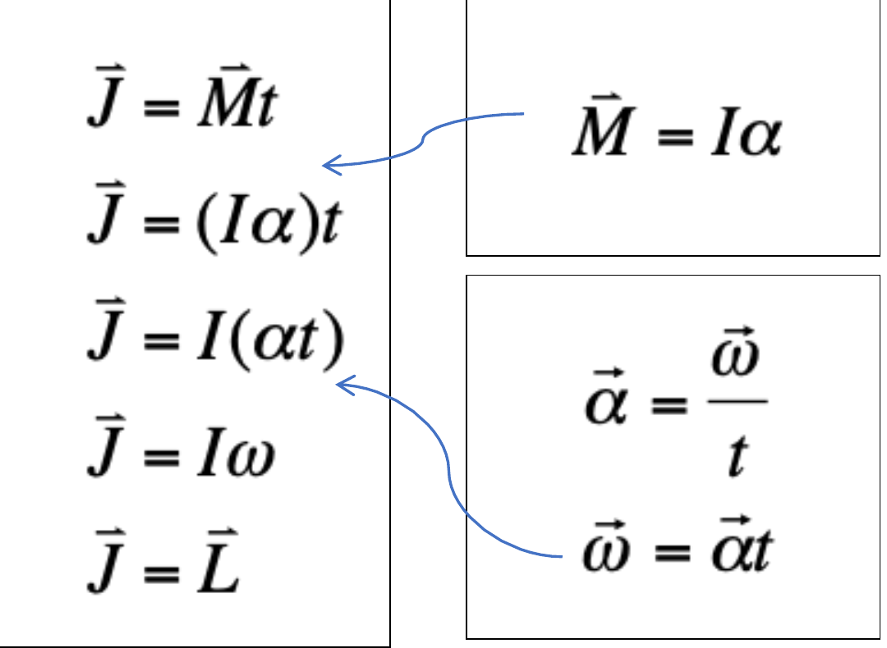
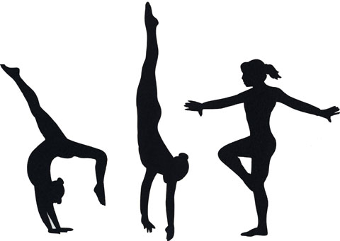
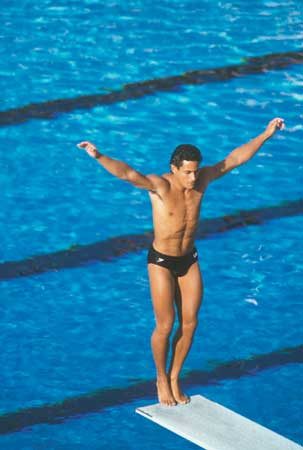
Each line is one substitution. Read it downward and it is a derivation,
not a list to memorise.
Angular Kinetics 3
Example problem — the Olympic diver
An Olympic diver exerts a torque of 20 N·m with
his body in full extension (I = 9 kg·m2) for
1.4 s before leaving the platform. What is his angular velocity at the
moment he leaves?
Given
M = 20 N·m t = 1.4 s
I = 9 kg·m2
Solution
M t = (Iω)f −
(Iω)i
(20)(1.4) = (9)ω − (9)(0)
28 = 9ω
ω = 3.11 rad/s, in the direction the
torque was applied
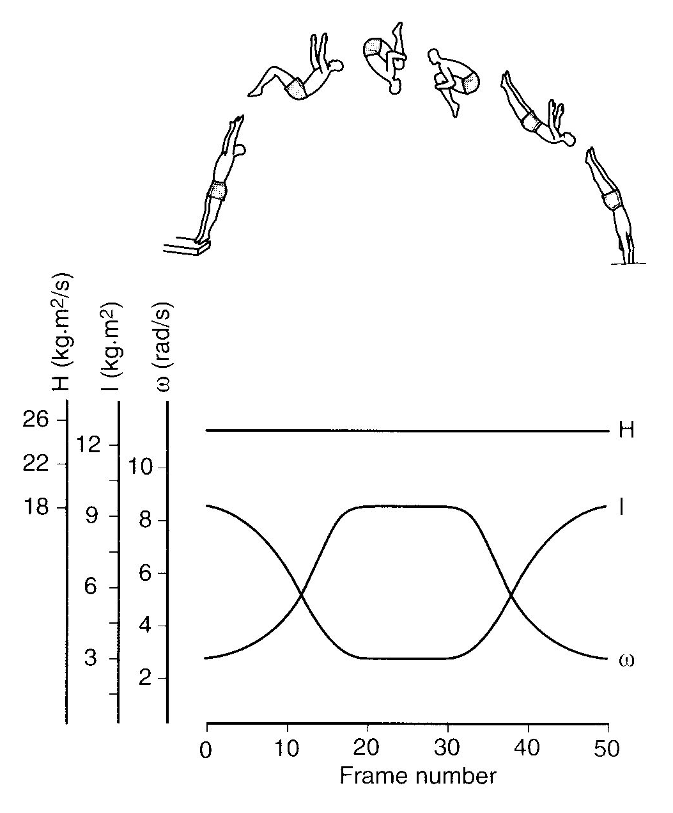
The published figure, and the whole lecture in one picture: through the
dive L is a flat line while I and ω
cross over each other.
Angular Kinetics 3
What to take away
I = Σ m r2 — mass counts
once, distance counts twice. Distribution beats mass.
I = m k2 — the radius of
gyration is the distance at which all the mass would give the same I, and
it is how segment tables are written.
Iaxis = ICofG +
m d2 — which is why the centre of gravity is
always the cheapest axis, and why a free body turns about it.
One I per axis per posture. For one person, 1.0 to
15.0 kg·m2.
L = Iω, and in the air L is
frozen — gravity acts at the centre of gravity, so it has no moment arm about
it. Measured: −9.71 m/s2 and no torque.
M = Iα, and
Mt = ΔL — angular momentum is bought
on the ground and spent in the air.
Check your answers against the world. 108 rad/s is 17 rev/s, and
nobody spins that fast.
The through-line: of everything in M =
Iα and L = Iω, the only term a person can
change mid-movement is I. That is why technique looks the
way it does.